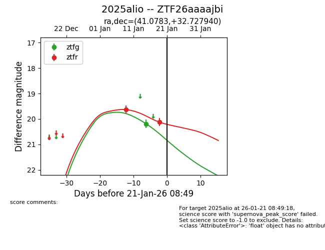
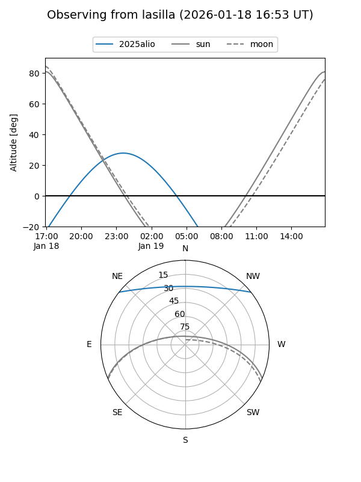
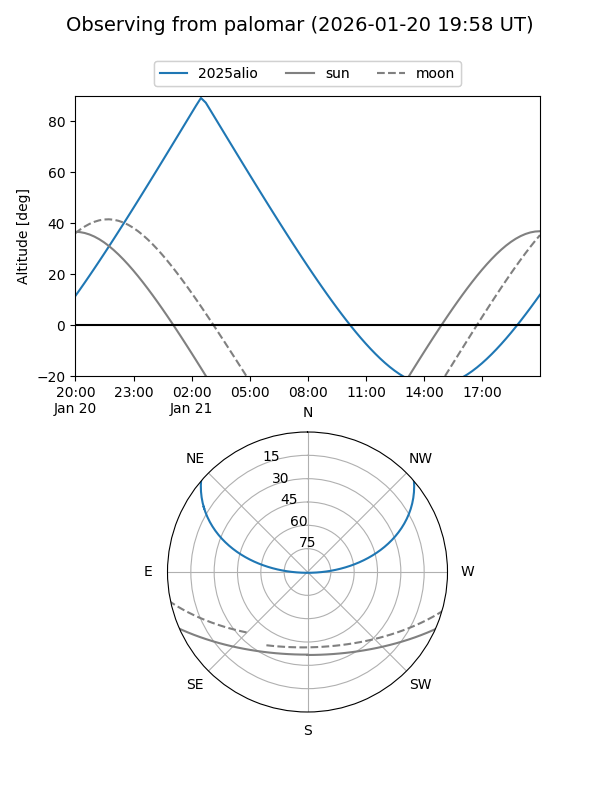

2025alio
Target 2025alio at 2026-01-17 08:45
Aliases and brokers:
FINK: link
Lasair: link
ALeRCE: link
TNS: link
YSE: link
alt names
ZTF26aaaajbi (ztf,fink_ztf)
2025alio (tns,yse)
Coordinates:
equatorial (ra, dec) = 41.0783,+32.72794
equatorial (HMS+DMS) = 02:44:18.79,+32:43:40.58
galactic (l, b) = (148.8322,-24.40525)
Flags:
Photometry:
last ztfg=20.19, ztfr=19.63
1 ztfg, 1 ztfr detections
Lightcurve

Visibility


Additional plots